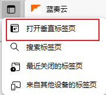
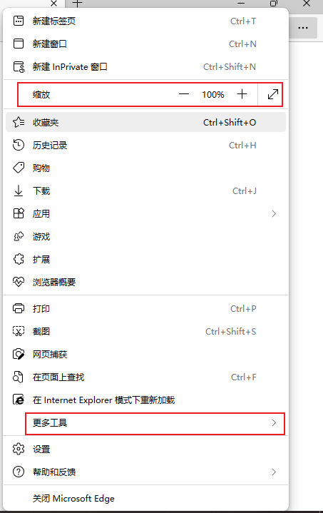

返回首页
1.http前加read
强行进入阅读模式(可直接复制)
2.打开垂直标签

3.放大 (别忘更多功能)

4.快捷键(加号并非操作按键)
搜网页,历史记录优先,edge操作优先 : ctrl + Q
销毁网页 : ctrl + W
打开顶部搜索框 : ctrl + E / ctrl + K
刷新页面 : ctrl + R / f5
新建网页 : ctrl + T
打开网页源代码 : ctrl + U
选择打开文件,覆盖当前网页 : ctrl + O
打开打印页面,打印当前页面 : ctrl + P
全选 : ctrl + A
保存网页 : ctrl + S
收藏网页 : ctrl + D
搜索当前网页内容 : ctrl + F / ctrl + G / f3
打开历史记录 : ctrl + H
打开下载 : ctrl + J
全选当前网页网址 : ctrl + L / f4 / 双击f6 / alt + D
打开新的edge : ctrl + N
网址中显示光标 : f7
突出设置 : f10
全屏 应用都可以 : f11
打开设置 : alt + E / alt + F
返回 : alt + 向左键
截图, 可自定义 : ctrl + shift + S
进入edge帮助页面 : f1
(f8、f9、f10、f12
ctrl + Y、I、Z、X、V、B、M 无效果